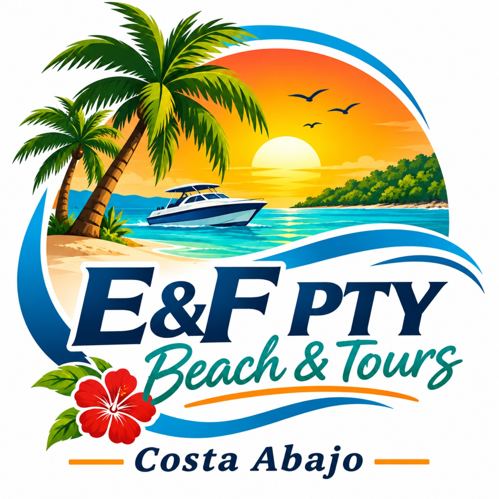

Costa Abajo
Escapadas por la costa caribeña de Colón, con paisajes, playas y experiencias personalizadas.
💬 Consultar este destinoExplora Costa Abajo, Isla Grande, Portobelo, Playa La Angosta, Bocas del Toro y San Blas con E&F PTY Beach & Tours.

Explora cada destino por separado y consulta disponibilidad por WhatsApp Business. Recomendamos consultar con 24 horas de anticipación; también atendemos consultas para el mismo día.
Escapadas por la costa caribeña de Colón, con paisajes, playas y experiencias personalizadas.
💬 Consultar este destino
Consulta por paseos de playa e isla, ideales para disfrutar del Caribe panameño.
💬 Consultar este destino
Descubre la historia, cultura y belleza natural de esta bahía caribeña.
💬 Consultar este destino
Una opción para disfrutar un día de mar y descanso en la provincia de Colón.
💬 Consultar este destino
Consulta por experiencias en islas y playas, sujetas a coordinación y confirmación.
Sujeto a disponibilidad y confirmación previa.
💬 Consultar este destino
Consulta por visitas a las islas de Guna Yala, sujetas a disponibilidad y confirmación.
Sujeto a disponibilidad y confirmación previa.
💬 Consultar este destinoLas fotografías son ilustrativas. Las excursiones, rutas, transporte y precios se confirman antes de reservar. No ofrecemos hospedaje.
Créditos de fotografías: Isla Grande — Baruc Acosta (CC BY-SA 3.0) · Portobelo — Lombana (CC BY-SA 4.0) · Bocas del Toro — Dronepicr (CC BY 3.0) · San Blas — Ayaita (CC BY 3.0). Fotografías de Costa Abajo y Playa La Angosta: ilustrativas; se reemplazarán por fotografías verificadas.
Conoce los lugares emblemáticos de Ciudad de Panamá en un recorrido flexible, con recogida y regreso al hotel.

Conoce uno de los íconos del país y una maravilla de la ingeniería.

Recorre calles históricas, arquitectura colonial y rincones ideales para fotografías.

Disfruta de vistas panorámicas de la ciudad y la bahía.
Mínimo 3 personas · Recogida y regreso al hotel incluidos · Recorrido flexible, sin duración fija.
Entradas, comidas y gastos personales no incluidos. Itinerario y reservas sujetos a confirmación.Créditos fotográficos: Canal de Panamá — John23Ms (CC BY 4.0) · Casco Viejo — RB Photo (CC BY 2.0) · Causeway de Amador — Alvin Javier Vanegas Pérez (CC BY-SA 4.0)
E&F PTY nace con una idea sencilla: reunir gastronomía, playa y turismo bajo una misma marca, con Punta del Medio, en Costa Abajo de Colón, como nuestro punto de referencia. Ahora también exploramos opciones de excursiones en Bocas del Toro.